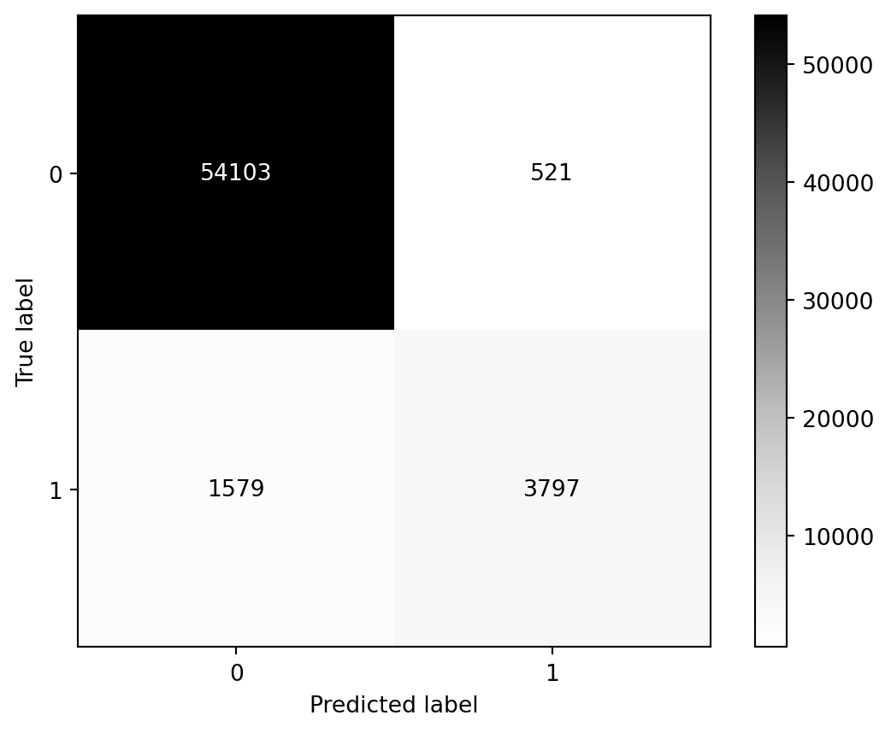
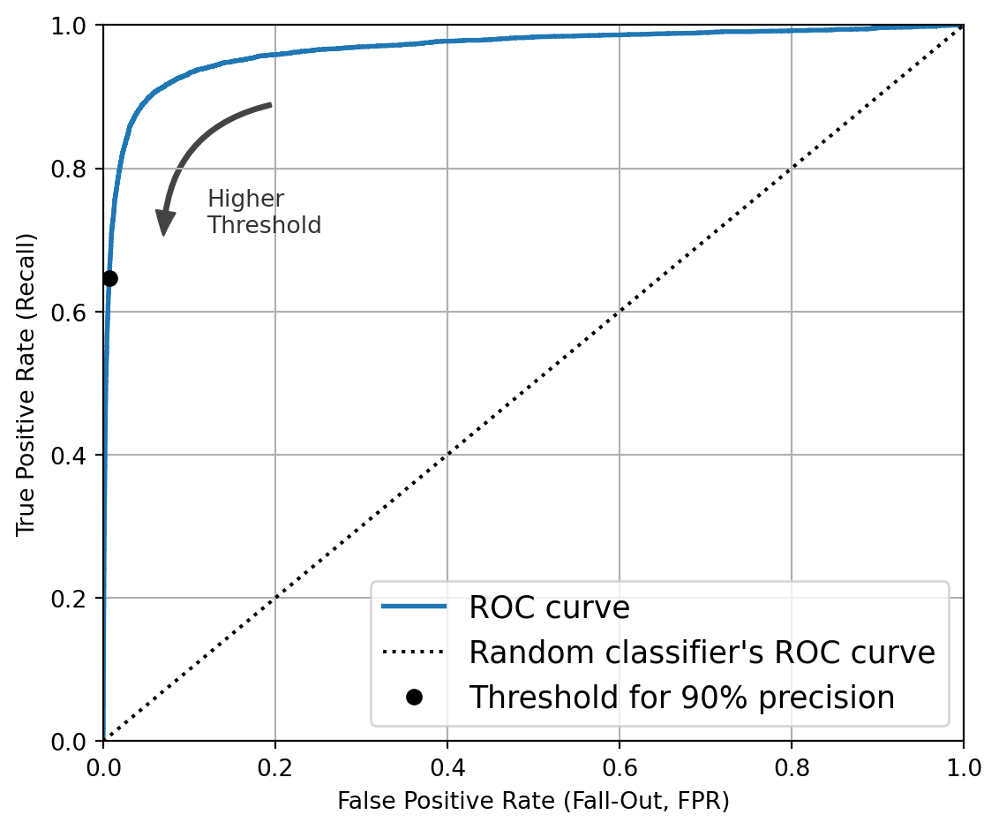

Classification is assigning predefined labels to data based on its features. It facilitates the recognition of patterns and the generalization of insights from data. Typical algorithms that incorporate this style of Machine Learning are Logistic Regression, Decision Trees, and Support Vector Machines. One very applicable use in everyone’s daily life is the spam filter. Data is either classified as spam or ham, algorithms can be tuned with datasets to assign these classes to unlabeled data.
CMD Plot
Here is a Confusion Matrix Display (CMD) Plot. It shows the prediction of the model in comparison with the true label. (0,0) are instances where the model predicts false and the true label is also false. (1,1) are the instances where the model predicts true and the true lable is also true.
Code for the CMD
from sklearn.metrics import ConfusionMatrixDisplayfrom sklearn.metrics import confusion_matrixfrom sklearn.model_selection import cross_val_predictfrom sklearn.linear_model import SGDClassifierfrom sklearn.model_selection import train_test_splitX_train, X_test, y_train, y_test = train_test_split( X, y, test_size=10000, random_state=42,)y_train_5 = y_train =='5'# True for all 5s, False for all other digitsy_test_5 = y_test =='5'sgd_clf = SGDClassifier(random_state=42)sgd_clf.fit(X_train, y_train_5)y_train_pred = cross_val_predict(sgd_clf, X_train, y_train_5, cv=3)cm = confusion_matrix(y_train_5, y_train_pred)cmd = ConfusionMatrixDisplay(cm)cmd.plot(cmap='Greys')
<sklearn.metrics._plot.confusion_matrix.ConfusionMatrixDisplay at 0x235179d1940>

Precision Recall Curve
This graph shows the precision recall curve which is a similar plot to the ROC but is used when there is more of a class imbalance. ROC curves are used when there is an equal distribution of classes in the dataset. It is used to show the performance of the model on test datasets. Precision is the proportion correct out of the amount predicted for that label. Recall is the amount predicted for that label out of the total correct predictions. With a PR Curve the part of the plot that matters is the top right as you want to balance precision and recall and have the best overall performance of the model.
This is a representation of a ROC Curve. It is a plot of the recall, as explained before, and the false positive rate (amount of false positives divided by the false positives and true negatives).
Code for the ROC Curve
from sklearn.metrics import roc_curveimport matplotlib.pyplot as pltimport matplotlib.patches as patches # extra code – for the curved arrowidx_for_90_precision = (precisions >=0.90).argmax()threshold_for_90_precision = thresholds[idx_for_90_precision]fpr, tpr, thresholds = roc_curve(y_train_5, y_scores)#| echo: trueidx_for_threshold_at_90 = (thresholds <= threshold_for_90_precision).argmax()tpr_90, fpr_90 = tpr[idx_for_threshold_at_90], fpr[idx_for_threshold_at_90]plt.figure(figsize=(6, 5)) # extra code – not needed, just formattingplt.plot(fpr, tpr, linewidth=2, label="ROC curve")plt.plot([0, 1], [0, 1], 'k:', label="Random classifier's ROC curve")plt.plot([fpr_90], [tpr_90], "ko", label="Threshold for 90% precision")# extra code – just beautifies and saves Figure 3–7plt.gca().add_patch(patches.FancyArrowPatch( (0.20, 0.89), (0.07, 0.70), connectionstyle="arc3,rad=.4", arrowstyle="Simple, tail_width=1.5, head_width=8, head_length=10", color="#444444"))plt.text(0.12, 0.71, "Higher\nThreshold", color="#333333")plt.xlabel('False Positive Rate (Fall-Out, FPR)')plt.ylabel('True Positive Rate (Recall)')plt.grid()plt.axis([0, 1, 0, 1])plt.legend(loc="lower right", fontsize=13)save_fig("roc_curve_plot")plt.show()

Code is from the textbook (Hands-on Machine Learning https://www.oreilly.com/library/view/hands-on-machine-learning/9781098125967/)